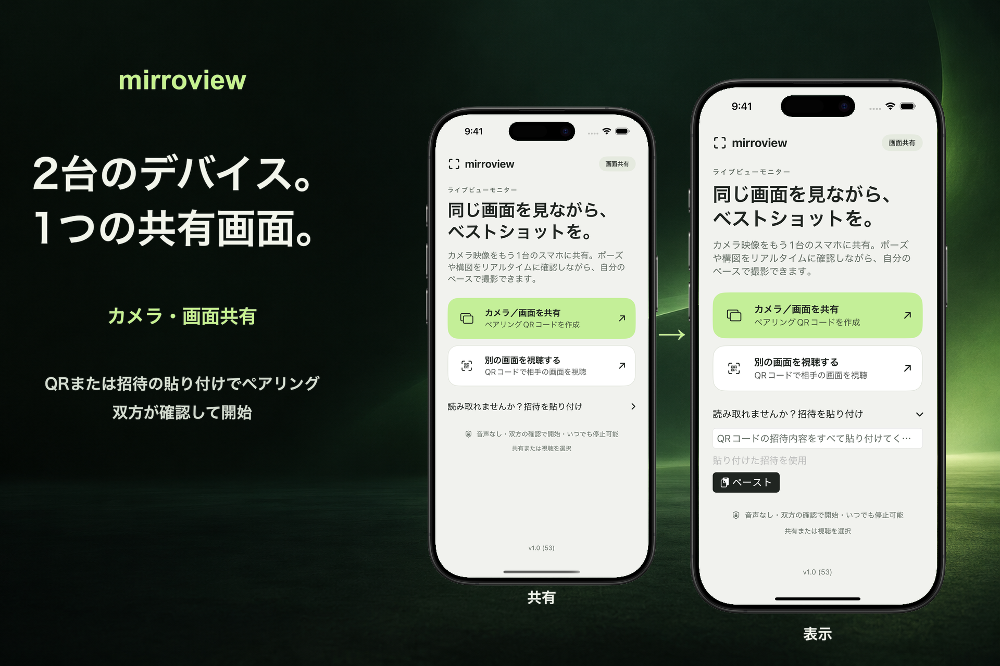

対面でペアリング
一方が招待を共有し、もう一方がQRコードをスキャンするか招待を貼り付け、双方がセッションを確認します。
合意の上で、同じ画面を共有
近くにいる相手とiPhoneまたはiPadの画面を共有します。両方のデバイスにiOSまたはiPadOS 17以降が必要です。双方がセッションを確認し、送信側がシステム画面で画面収録を承認します。

一方が招待を共有し、もう一方がQRコードをスキャンするか招待を貼り付け、双方がセッションを確認します。
ホーム画面から画面全体の共有を開始します。iOSまたはiPadOSの承認後、送信側はカメラを含む他のアプリを開いてその画面を表示できます。
どちらのデバイスからでもセッションを終了できます。初回の接続では、相互に通信可能な同じローカルWi-Fiネットワークを使用してください。近距離接続の利用可否は、デバイス、システムの対応状況、および無線環境に依存します。
画面共有により、通知やその他のプライベートな情報が表示される可能性があります。アプリは音声を送信しません。視聴側が画面のスクリーンショットや画面収録を行ったり、表示内容を別端末で撮影したりする可能性があります。保護された一部のコンテンツは空白で表示される場合があります。